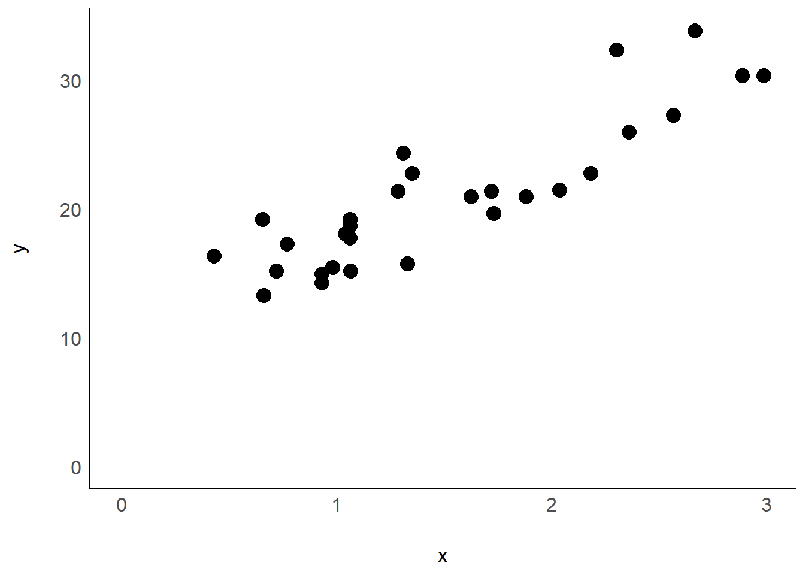
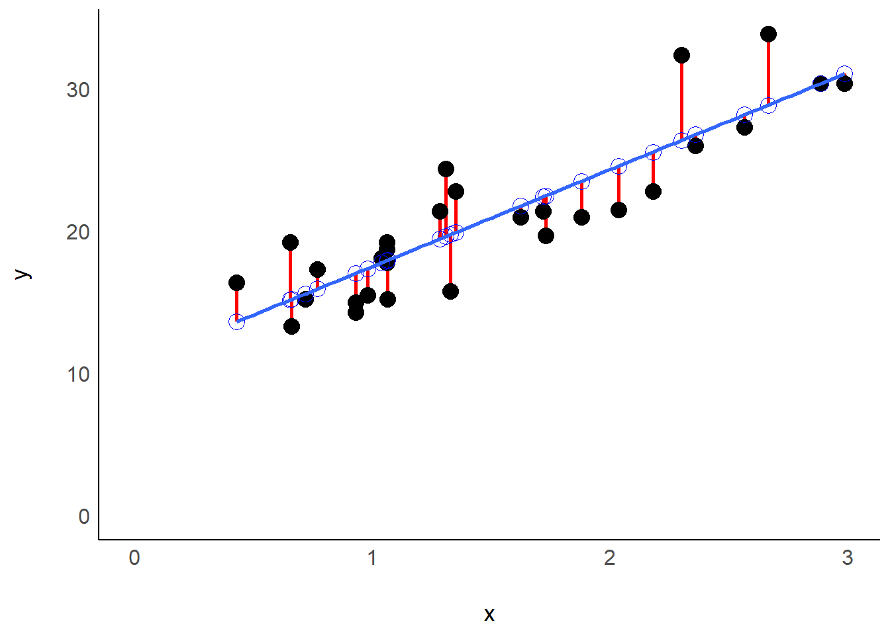

Model diagnostics
What are residuals?
A residual is the difference between the actually observed value (\(y\)) for a datapoint and the model’s prediction (\(\hat{y}\)) for that datapoint:
\[ Residual = Observed - Predicted \]
\[ r_i = \hat{e}_i = y_i - \hat{y}_i \]
Basically, whenever you fit a statistical model to a dataset, you can obtain the respective residuals.
Example
Observed
Take this example dataset with variables x and
y and 29 observations.
## # A tibble: 29 × 2
## x y
## <dbl> <dbl>
## 1 1.88 21
## 2 1.62 21
## 3 2.18 22.8
## 4 1.28 21.4
## 5 1.06 18.7
## 6 1.04 18.1
## 7 0.93 14.3
## 8 1.31 24.4
## 9 1.35 22.8
## 10 1.06 19.2
## # … with 19 more rows
Predicted
We here fit a simple model, i.e. a simple linear regression
to the dataset. Once we have the model’s estimated coefficients, we can
use the model to make predictions via the predict()
function. For this simple linear regression, the blue line represents
the model prediction for every possible x-value.
mod <- lm(y ~ x, data = dat)
dat %>%
mutate(y_hat = predict(mod)) %>%
head()## # A tibble: 6 × 3
## x y y_hat
## <dbl> <dbl> <dbl>
## 1 1.88 21 23.5
## 2 1.62 21 21.8
## 3 2.18 22.8 25.6
## 4 1.28 21.4 19.5
## 5 1.06 18.7 17.9
## 6 1.04 18.1 17.8
## (Intercept) x
## 10.697137 6.821287Residuals
We here calculate residuals once via the resid()
function and once via manually subtracting y - y_hat just
to show that it really gives us the same result.
dat %>%
mutate(resid_1 = y - y_hat,
resid_2 = resid(mod)) %>%
head()## # A tibble: 6 × 5
## x y y_hat resid_opt1 resid_opt2
## <dbl> <dbl> <dbl> <dbl> <dbl>
## 1 1.88 21 23.5 -2.52 -2.52
## 2 1.62 21 21.8 -0.782 -0.782
## 3 2.18 22.8 25.6 -2.77 -2.77
## 4 1.28 21.4 19.5 1.94 1.94
## 5 1.06 18.7 17.9 0.772 0.772
## 6 1.04 18.1 17.8 0.309 0.309
Ok, but why do I care?
You care because residuals can tell you whether your model is valid or not. Very simply put: If they are “bad” your model’s results may be wrong.
When fitting a general linear model certain things are assumed to be true
—> By the ANOVA?
Please feel free to contact me about any of this!
schmidtpaul1989@outlook.com